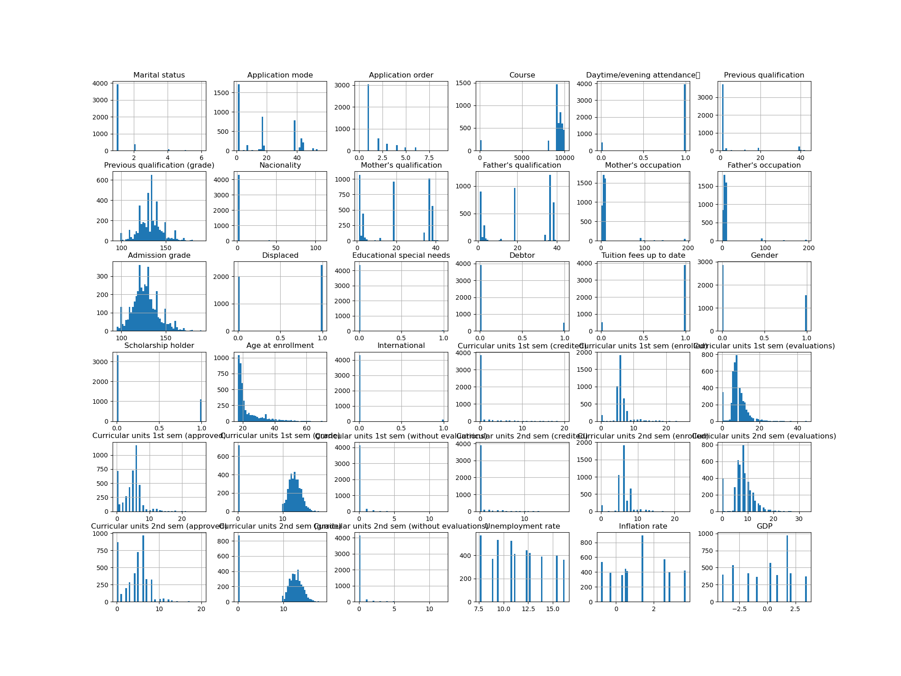
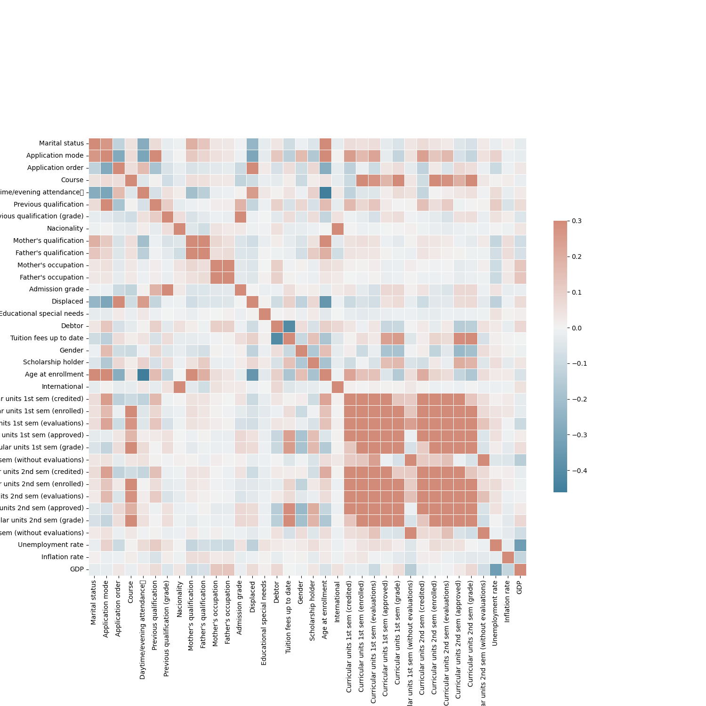

Features
| Marital status | Application mode | Application order | Course |
| Daytime/evening attendance | Previous qualification | Previous qualification (grade) | Nacionality |
| Mother's qualification | Father's qualification | Mother's occupation | Father's occupation |
| Admission grade | Displaced | Educational special needs | Debtor |
| Tuition fees up to date | Gender | Scholarship holder | Age at enrollment |
| International | Curricular units 1st sem (credited) | Curricular units 1st sem (enrolled) | Curricular units 1st sem (evaluations) |
| Curricular units 1st sem (approved) | Curricular units 1st sem (grade) | Curricular units 1st sem (without evaluations) | Curricular units 2nd sem (credited) |
| Curricular units 2nd sem (enrolled) | Curricular units 2nd sem (evaluations) | Curricular units 2nd sem (approved) | Curricular units 2nd sem (grade) |
| Curricular units 2nd sem (without evaluations) | Unemployment rate | Inflation rate | GDP |
Target
- We look to determine if our model will be able to predict if the student will dropout or gradute.
Exploratory Data Analysis (EDA)
We use matplotlib or plot our features against the target so we can have a good enough idea of numerical features, how do they look like, their common values in a large number of houses and their distribution.

We also plot our correlation of the features against the target
